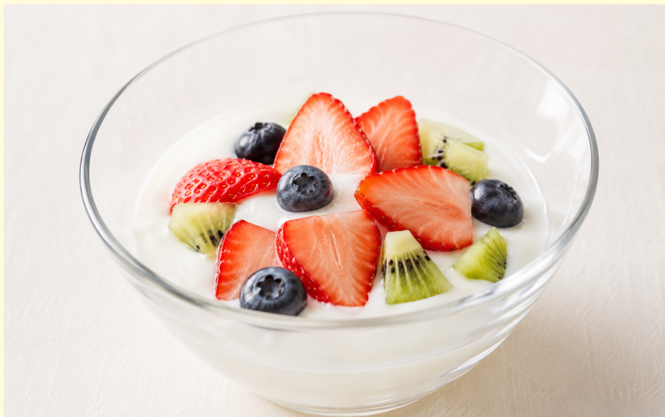
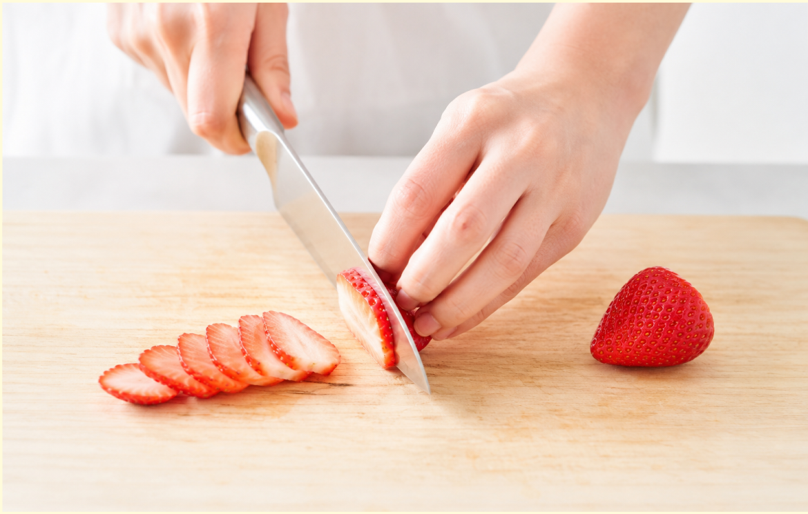
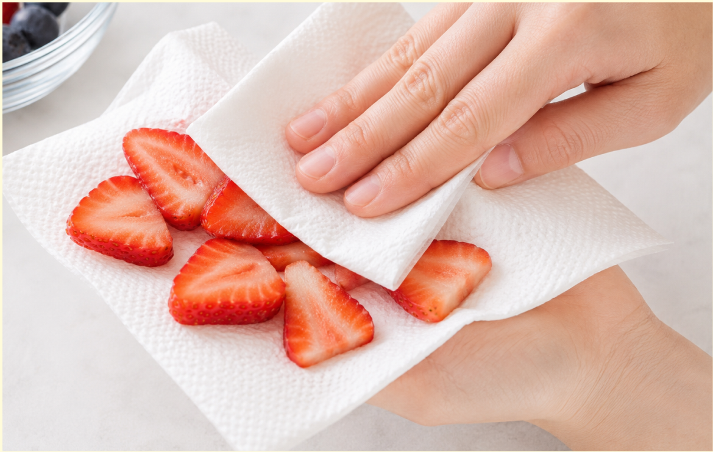
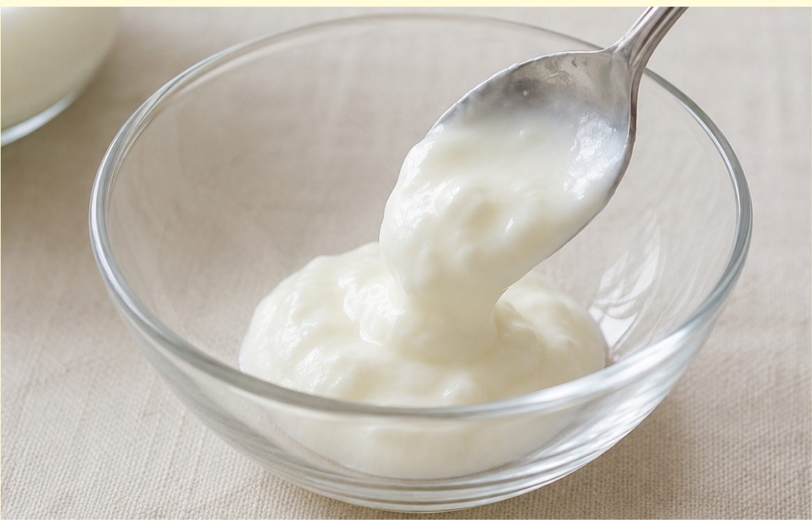
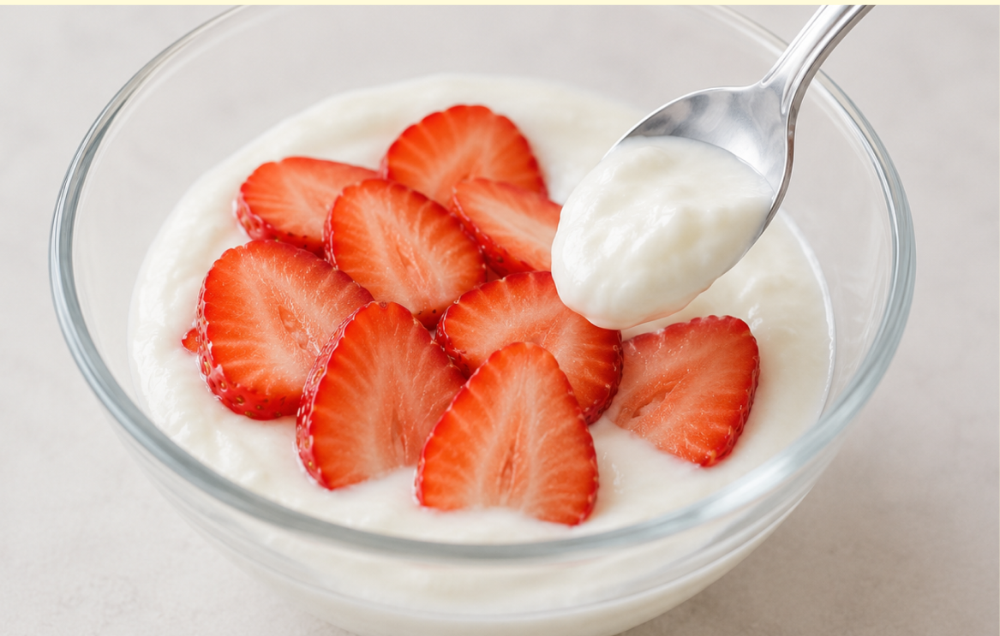
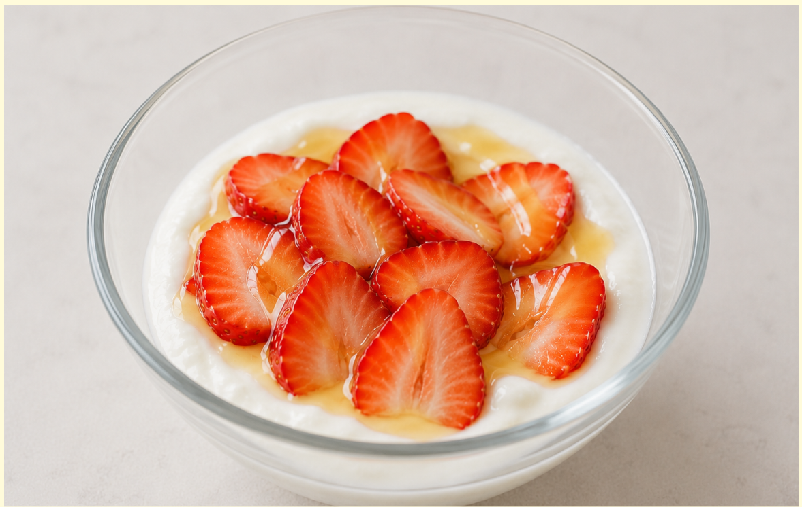

材料（一人分）
- ・プレーンヨーグルト100g
- ・好きなフルーツお好みの量
- ・はちみつ（お好みで）小さじ1
必要な道具
- ・器
- ・包丁（使う場合）
- ・キッチンペーパー
注目ポイント
- 🚫 火を使わない
- 💡 アレンジしても◎
- ⏱️ 5分以内に完成
作り方
① 用意したフルーツを食べやすい大きさに切ります。

② いちごやキウイなど水分の多いフルーツは、 キッチンペーパーで軽く水気を拭くと ヨーグルトが水っぽくなりにくくなります。

③ 器にプレーンヨーグルトを入れます。

④ 切ったフルーツをヨーグルトの上に バランスよくのせます。

⑤ 甘さが足りない場合は はちみつをかけます。 軽く混ぜて完成です。

調理のコツ
フルーツの水気を取ると、
ヨーグルトが水っぽくなりにくいです。
はちみつはかけすぎないようにすると、
フルーツの甘さが引き立ちます。
アレンジ
グラノーラを加えると、
食べ応えのある朝食になります。
はちみつの代わりにジャムを少量混ぜても
おいしく食べられます。
冷凍フルーツを使うと、
ひんやりしたデザートになります。